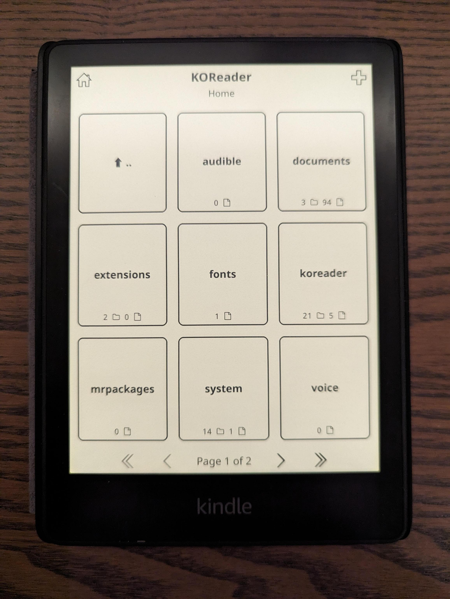

Jailbreaking / rooting my Paperwhite 5 ebook reader and installing KOReader
This is just a quick summary of things I’ve found when rooting my paperwhite. More of a reminder for myself what steps to take. Obviously I havn’t created the jailbreak, just used the steps provided by others.
The goal here was to run KOReader on Kindle so I can read EPUB format without conversion.
I kept my paperwhite in airplane mode for quite a long time hoping somone will create a jailbreak. And after some time I saw this great project: https://github.com/notmarek/LanguageBreak
In my case the firmware version was exact match so 5.16.2.1.1.
notes
Just follow the tutorial on the github page: https://github.com/notmarek/LanguageBreak
I have one extra note on that tutorial (steps 10-12): When it says you must be quick to plug in the cables - YOU MUST BE REAL QUICK, like split second. Also it seems you only have few seconds to copy the files AND eject Kindle. Otherwise it will reboot before you finish. Just have all the files ready to by coppied and be prepared to click “override” or whatever your OS calls that. Then eject Kindle to make sure it’s written.
I messed up this step and it looked like jailbreak was successful but I coudn’t run anything.
In case you’ve messed up like I did
I was able to recover from failed rooting by installing clean image again.
Firmware:
wget https://s3.amazonaws.com/firmwaredownloads/update_kindle_all_new_paperwhite_11th_5.16.2.1.1.bin
Put in in the root folder of kindle to update. Then just go to settings and update. All in Airplain mode. In my case it failed once, but then worked when I tried again.
KOReader
I’ve used the version koreader-kindlepw2-v2023.10.zip at the time. Things might have changed since then.
The official documentation suggests using KUAL but for some reason it doesn’t work for me. I’ve tried multiple times but it seem to just crash.
What worked was suggestion from this thread from user Dexmaster: https://www.mobileread.com/forums/showthread.php?p=4376655
… First install: LanguageBreak hotfix just by putting in in root dir related to your language of choice (and running Update from settings)
Create
mrpackagesandextensionsfolders on kindle.Download
K5 JailBreak Hotfixbin and put inmrpackagesfolder, downloadMR Package Installerand unpack it inextensionsfolder as usual (from https://www.mobileread.com/forums/showthread.php?t=225030)Now after this you can run (by typing in search)
;log mrpito install hotfix too.And after it reboots you can download and unpack koreader folder onto Kindle.
Then create RUNME.sh with content:
#!/bin/sh /bin/sh /mnt/us/koreader/koreader.shRunning (typing in serch)
;log runmewill start Koreader, so Jailbreak works but for some reason it’s broken enough so KUAL doesn’t.
This worked and I was very happy. The only problem I had was that the KOReader was starting on top of Kindle default interface - sometimes it would overlap.
To solve this I’ve used option KOReader provides which is --framework_stop.
So whole script looks like this:
#!/bin/sh
/bin/sh /mnt/us/koreader/koreader.sh --framework_stop
Then in search bar running: ;log runme stops the default Kindle GUI and starts KOReader.
The other thing is that run this way KOReader shows the book covers so everything works flawlessly as it was native.
Lastly, exiting KOReader in that state simply reboots Kindle. You should do that if you are moving files over USB.
